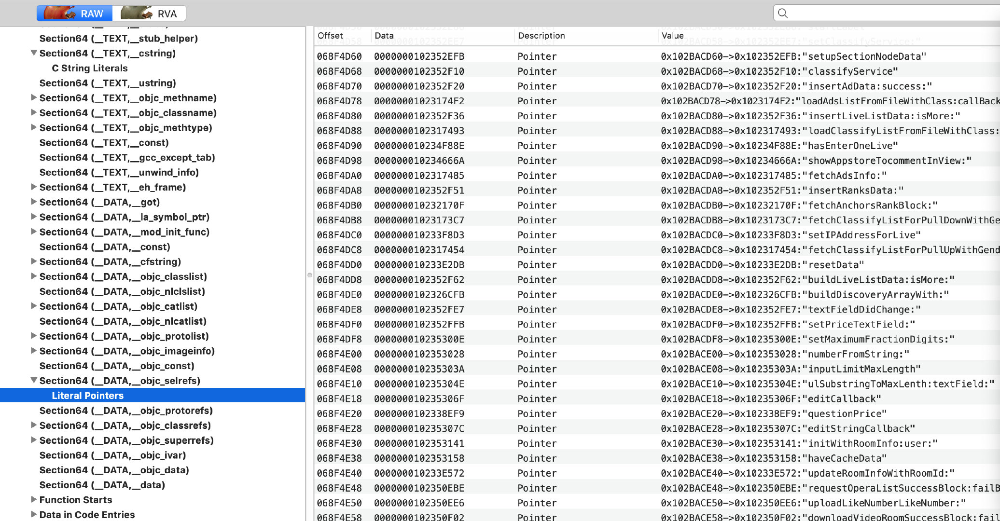
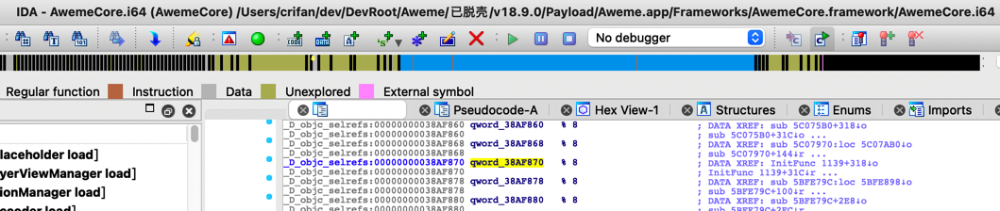
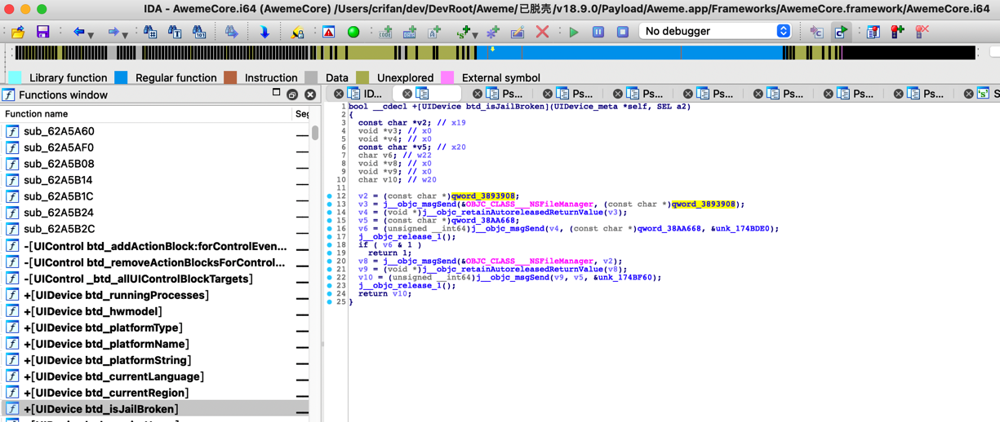
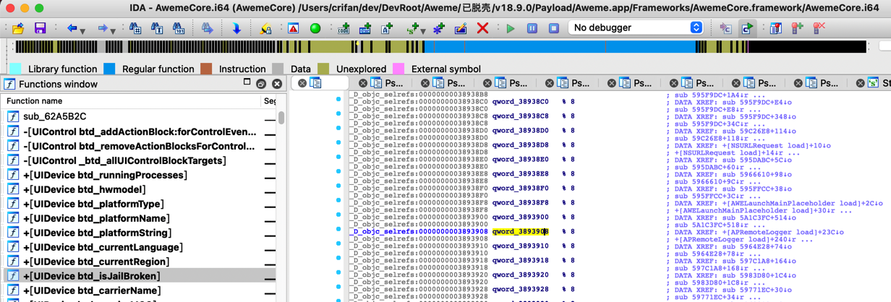
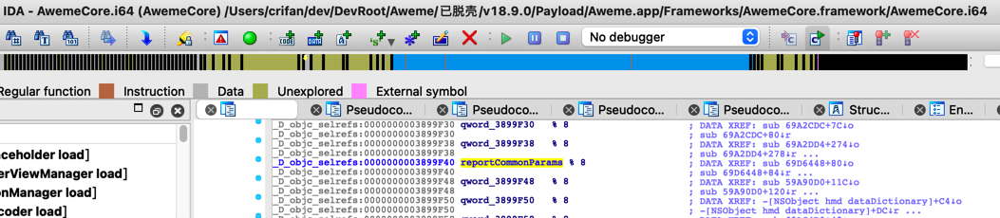

ObjC
TODO：
- 【已解决】研究抖音设备注册逻辑：___lldb_unnamed_symbol580715$$AwemeCore
- 【已解决】iOS逆向心得：如何从对x8的adrp和ldr计算出对应的qword字符串值
背景知识
SectionName和描述__objc_imageinfo记录 Objective-C 环境信息等，dyld 用它来判断镜像是否是 objc 镜像__objc_classlist记录镜像所定义的类，每个条目都是一个指针，指向到 __objc_data section__objc_data存放真正的类数据，和 __objc_classlist 条目呼应__objc_classname类名列表__objc_methodname方法名列表__objc_methodtype方法类型列表__objc_selrefsselector 列表信息，每个条目是指向到 __objc_methname 的指针，记录 selector 的名字__objc_classrefs类引用列表__objc_ivar类的成员变量列表__objc_const存放类的元数据，包括：method list、variable list、property list、class info
->MachOView可以查看二进制的这些段的信息：

数据定义含义
_D_objc_selrefs

_D_objc_selrefs:00000000038AF870 qword_38AF870 % 8
中的含义是：
_D_objc_selrefs- ObjC的section段
__objc_selrefs中的D=Data=数据
- ObjC的section段
%- align对齐？
8- 以
8字节对齐？
- 以
调试出const char* qword是字符串并改名优化定义和伪代码
- 背景
IDA分析抖音AwemeCore时，发现：
伪代码：
)
bool __cdecl +[UIDevice btd_isJailBroken](UIDevice_meta *self, SEL a2)
{
const char *v2; // x19
void *v3; // x0
void *v4; // x0
const char *v5; // x20
char v6; // w22
void *v8; // x0
void *v9; // x0
char v10; // w20
v2 = (const char *)qword_3893908;
v3 = j__objc_msgSend(&OBJC_CLASS___NSFileManager, (const char *)qword_3893908);
v4 = (void *)j__objc_retainAutoreleasedReturnValue(v3);
v5 = (const char *)qword_38AA668;
v6 = (unsigned __int64)j__objc_msgSend(v4, (const char *)qword_38AA668, &unk_174BDE0);
j__objc_release_1();
if ( v6 & 1 )
return 1;
v8 = j__objc_msgSend(&OBJC_CLASS___NSFileManager, v2);
v9 = (void *)j__objc_retainAutoreleasedReturnValue(v8);
v10 = (unsigned __int64)j__objc_msgSend(v9, v5, &unk_174BF60);
j__objc_release_1();
return v10;
}
希望知道qword_3893908是什么内容，搞懂后，改名，优化伪代码和定义。
- 过程
经过调试：
(lldb) po (BOOL)[(UIDevice*)0x1dfc62a88 btd_isJailBroken]
2022-03-28 14:55:19.836905+0800 Aweme[39046:2680736] hook_openFile_iOS.xm NSFileManager$fileExistsAtPath$: path=/Applications/Cydia.app -> isJbPath=True -> isExists=False
2022-03-28 14:55:19.838832+0800 Aweme[39046:2680736] hook_openFile_iOS.xm NSFileManager$fileExistsAtPath$: path=/private/var/lib/apt -> isJbPath=True -> isExists=False
得知qword_3893908应该是其中一个越狱路径字符串
但是IDA中却看不出来，只能看出定义是：
_D_objc_selrefs:0000000003893908 qword_3893908 % 8 ; DATA XREF: +[APRemoteLogger load]+23C↓o
_D_objc_selrefs:0000000003893908 ; +[APRemoteLogger load]+240↓r ...

参考资料地址：
dword- 具体的含义，取决于实际情况
- 指针
- 指针的指针（地址）
- 指针的指针的指针
- 等等
- 总之就是：
offset dword_XXXX=dword_XXXX的原始地址 = 其指向一个东西 = 具体是啥东西，取决于实际情况- 此处抖音
AwemeCore中，往往是一个字符串- 只不过IDA静态分析，看不出具体值
- 此处抖音
- qword_xxx
- 虽然多数情况下是字符串
IDA伪代码中常见写法：(char *)qword_xxx
- 但是偶尔也有：非字符串的，比如是某个类，比如
<NSRecursiveLock: 0x281d67bf0>{recursion count = 0, name = nil}- IDA伪代码写法：
(void *)qword_56AB210
- IDA伪代码写法：
- 虽然多数情况下是字符串
- 具体的含义，取决于实际情况
后续得知，可以通过调试去打印出具体值：
核心逻辑是：
qword_xxx的xxx是二进制内偏移量 + 二进制的ALSR = 实际（字符串的）地址
去查看： [ 实际（字符串的）地址 ] = （即可查看到）保存了对应的字符串
举几个例子：
(lldb) image list -o -f | grep AwemeCore
[ 0] 0x0000000104acc000 /Users/crifan/Library/Developer/Xcode/DerivedData/Aweme-fswcidjoxbkibsdwekuzlsfcdqls/Build/Products/Debug-iphoneos/Aweme.app/Frameworks/AwemeCore.framework/AwemeCore
qword_3896270
(lldb) p/x 0x0000000104acc000 + 0x3896270
(long) $15 = 0x0000000108362270
(lldb) x/1gx 0x0000000108362270
0x108362270: 0x0000000105859bc6
(lldb) po (char*)0x0000000105859bc6
"onTheFlyParameter"
—》
qword_3896270 = "onTheFlyParameter"
qword_38B2148
(lldb) p/x 0x0000000104acc000 + 0x38B2148
(long) $17 = 0x000000010837e148
(lldb) x/1gx 0x000000010837e148
0x10837e148: 0x00000001c5619497
(lldb) po (char*)0x00000001c5619497
"dictionaryWithDictionary:"
-> qword_38B2148 = "dictionaryWithDictionary:"
qword_3925208
(lldb) p/x 0x0000000104acc000 + 0x3925208
(long) $19 = 0x00000001083f1208
(lldb) x/1gx 0x00000001083f1208
0x1083f1208: 0x000000010957bb48
(lldb) po (char*)0x000000010957bb48
"configParams"
->qword_3925208 = "configParams"
qword_38A1D98
(lldb) p/x 0x0000000104acc000 + 0x38A1D98
(long) $21 = 0x000000010836dd98
(lldb) x/1gx 0x000000010836dd98
0x10836dd98: 0x0000000105892952
(lldb) po (char*)0x0000000105892952
"ttinstall_stringValueForKey:"
->qword_38A1D98 = "ttinstall_stringValueForKey:"
后续还遇到其他类似例子：
- IDA的伪代码中qword没有char*的强制转换如果是_D_objc_selrefs则也表示是字符串
IDA伪代码中：
if ( (unsigned int)jmp_objc_msgSend_D523EEC(v0, respondsToSelector_1, qword_3899F40) )
虽然qword_3899F40前面没有const char *或char *的强制转换。
但是，看到定义中（修改值后）是：
_D_objc_selrefs:0000000003899F40 reportCommonParams % 8 ; DATA XREF: sub_69D6448+80↓o
_D_objc_selrefs:0000000003899F40 ; sub_69D6448+84↓r ...

即是objc_selrefs的类型，即是ObjC的函数的自我引用
-》则可以推断出就是：某个类的某个函数名
所以也就是：字符串类型的值
所以此处去计算和转换成char *是合理的
所以算出来是：
qword_3899F40->0x3899F40
(lldb) p/x 0x00000001037b4000 + 0x3899F40
(long) $1 = 0x000000010704df40
(lldb) x/1gx 0x000000010704df40
0x10704df40: 0x00000001045537b4
(lldb) po (char*)0x00000001045537b4
"reportCommonParams"
然后再去优化伪代码，改为：
if ( (unsigned int)jmp_objc_msgSend_D523EEC(v0, respondsToSelector_1, reportCommonParams) )
即可。